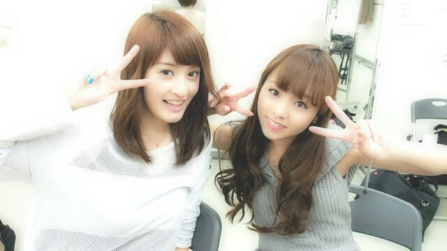

やあ !
ろろろろってぃーだよーー(/・▽・)/
今日は久々 オデコちゃん
出してたの ♪
気温差激しいね(´ω`)
今日は本当暖かったもんね、
皆 体調に気を付けようっちゃ←笑♪
日付かわって２０日
今日だね、
5thシングル発売記念
全国握手会です(>▽<)! !
ステージも握手も
すっごくすっごく
楽しみです !
レーンは
キャプテンれいかと(^O^)
嬉しいキモチ !
れいか♪と
いつも変な絡みして
楽しんでる((/ *・▽・*)/笑
れいか好き。
Rotty夢☆の皆さん,
れいかfam★の皆さん,
よろしくお願いしますぅ〜\(´▽`)/
そして...
「東日本大震災チャリティー
イベント2013」
私なりに色々と考え
ステージに立ちたいと
思っています。
今の私達にできることは
歌って踊ること。
私達の思いを少しでも
うけとってくれると
嬉しいです。
よろしくお願いします !
Rotty☆でしたん /
せっちゃん♪とだよ〜ん(^^)
のし
